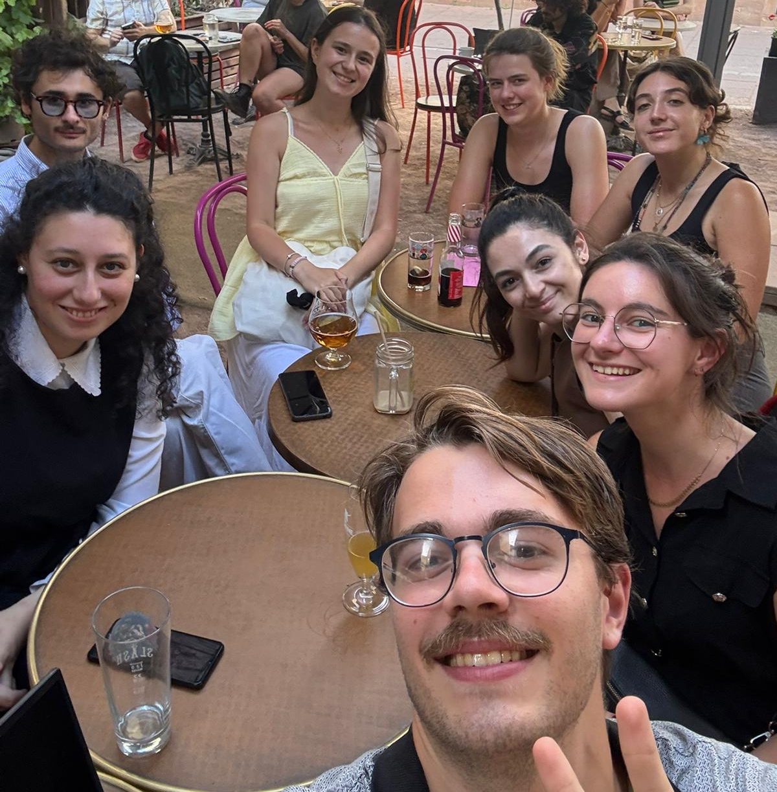

Début de l'aventure
Notre équipe s'est rencontrée lors de la semaine Future of Europe organisée à Strasbourg...
FOE at European Parlement
Our team :)
Témoignages et rencontres
Ici espace disponible pour des témoignages de jeunes que nous avons rencontrés...
Flora, Buzançais, France
1) Yes, It's the right.
2) She used to have one but nowadays she votes for the less bad.
3) She lacks information about what are the local policies. So It's a no.
4) She fears It would take too much time to get involved. Also, the local initiatives are only destinated at old people or families in the area, If there was more young initiated or related initiatives she would be more interested
5) An event that get people together and make them mix otherwise everyone stays in it’s group, for example speed dating for friends or table of people in front of each other that have some time to speak before changing their seat.
Portrait 2
Ici sera placé un témoignage de jeune
Portrait 3
Ici sera placé un témoignage de jeune
Données et statistiques
La démographie et les comportements électoraux en France montrent des écarts importants entre générations, tant du côté des électeurs que des élus. Ces données illustrent le poids plus faible des jeunes dans les décisions politiques et leur sentiment croissant de défiance envers le système démocratique.
Solutions innovantes
Ici espace disponible pour présenter des exemples concrets de solutions innovantes...
Étude de cas 1
Ici sera présentée une solution innovante avec illustrations
Image/Illustration à placer ici
Étude de cas 2
Ici sera présentée une autre solution avec ses résultats
Image/Illustration à placer ici
Further exploration
Here are some examples of authors or other sources on topics related to our article.
Salome Saqué
French journalist who worked and wrote a book on the struggles of youth participation and why It matters to act about It.
Her book.